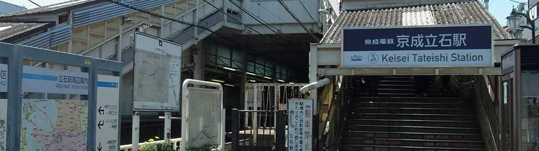

理念
- ホーム
- パンくず
メッセージ
私は、現場に根ざした当事者の視点の活動を重視しています。よりよいまちをつくるためには住民の参画が欠かせません。一人一人の区民の力が住みやすいまちをつくります。そのために人と人とがつながりともに支え合える社会をつくっていきたいと思っています。中には多数にはならない、少数の課題もあるでしょう。そのような課題ついて情報を集め住民代表として区政に反映させ、行政としての制度をつくっていくのが議員としての私の仕事だと思っています。子どもやご高齢の方、障がいをお持ちの方など社会的に弱い立場にいる方や少数の方など全ての方が住まいやすい町は、全ての人にとっても住いやすいまちになります。また、後世のためにも持続可能な発展を進めていかなければなりません。ともに支え合える社会を、次世代に責任を持てる社会をつくるため日々活動を進めてまいります。
想い
葛飾に引越してきたときは、自分が議員になるなど夢にも思っていませんでした。連れ合いの通勤しやすい場所を選び、昭和６３年に立石のアパートに居を構えたのは偶然の巡り合わせでした。平成元年生まれの長男を毎日保育園に通わせながら自宅でイラストなどを隠し事をしていました。
しかし、長男が小学校に入った時、その小学校に学童保育が無かったことから人生が変わったと思います。
学童保育が欲しいと同じ立場の親たちと集まり、区に働きかけが始まりました。 足掛け３年かけなんとか学童保育クラブ（現在の葛飾風の子学童保育クラブ）ができ、あきらないで息の長い活動の大切さ、区との話し合いの積み重ねの大切さを感じました。
その後、長男が保田養護学校（現保田しおさい学校）に入校することになったのですが、今度は保田が廃校寸前とのことがわかり、保護者同士で話し合いPTA会長に就任すると同時に存続運動を始まりました。 JCに体験学習などの事業の協力をいただきながら、教育委員会や議会との交渉を積み重ね、足掛け4年で存続が決まりました。
学童保育と保田養護学校の活動と平行して、三番瀬の保全活動に関わり、埋め立て計画に賛成反対の二者択一ではなく、そこにある課題をまちづくりの視点で解決するワークショップなどに参加してきました。
これらのことで
- 「気がついた人が動かなければ変わらないということ」
- 「賛成反対だけではなく行政などの仕組みを知り、対案を提案していくことの大切さ」
- 「人と人とのつながりが力を産み、新しい発想や行動力になること」
- 「一度要請してあきらめるのではなく、あきらめの悪さ、言い換えれば粘り強く続けなければならない」
などを学ばさせていただきました。
また、青戸にあった子どもの本専門店たんぽぽ館のスタッフとして５年関わるかたわら、図書読み聞かせボランティアを進めてきました。 他にも学校図書館ボランティア連絡会や、葛飾区おやじの会、子育てネットワーク、図書館友の会、子ども若者応援ネットワークなどの立ち上げにも携わってきました。
その後、当時の民主党から区議選に誘われ、数ヶ月悩んだ末、子育てや環境、まちづくりの経験を伝え、当事者の思いを活かすことが出来るのならば、と区議選に挑戦をする決意を固めました。